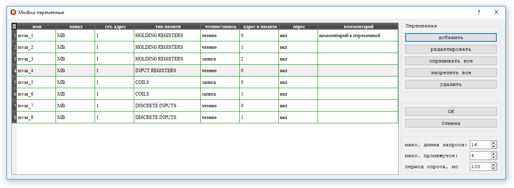
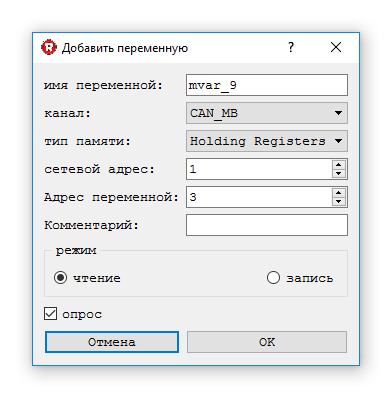

Modbus переменные позволяют читать и писать данные по интерфейсу RS485 во внешние устройства, поддерживающие протокол Modbus RTU. С ними можно работать как с обычными переменными в теле программы. Для каждой переменной настраиваются параметры связанного с ней Modbus устройства.
Ниже представлен внешний вид окна настройки Modbus переменных

При создании новой переменной (кнопка "добавить") пользователь может ввести:

При необходимости уже созданные переменные можно отредактировать или удалить.
После внесения изменений в Modbus переменные необходимо перекомпилировать проект и загрузить обновлённую программу в контроллер.
Если необходимо временно исключить (или в дальнейшем опять включить) переменную из опроса не удаляя её можно воспользоваться флагом "опрос" в настройке переменной. Кнопки "опрашивать всё" и "запретить всё" выполняют ту же функцию, но только для всех переменных.
Для повышения производительности контроллер пытается группировать несколько переменных в один Modbus запрос, учитывая настройки максимальной длины запроса и максимального промежутка между опрашиваемыми ячейками памяти.
В настройках проекта для Modbus переменных можно включить/отключить режим эмуляции (отдельная настройка независимо от эмуляции входов/выходов). При включенном режиме эмуляции переменные будут присутствовать в проекте, но реально опрашиваться не будут, что позволяет менять их из отладчика.